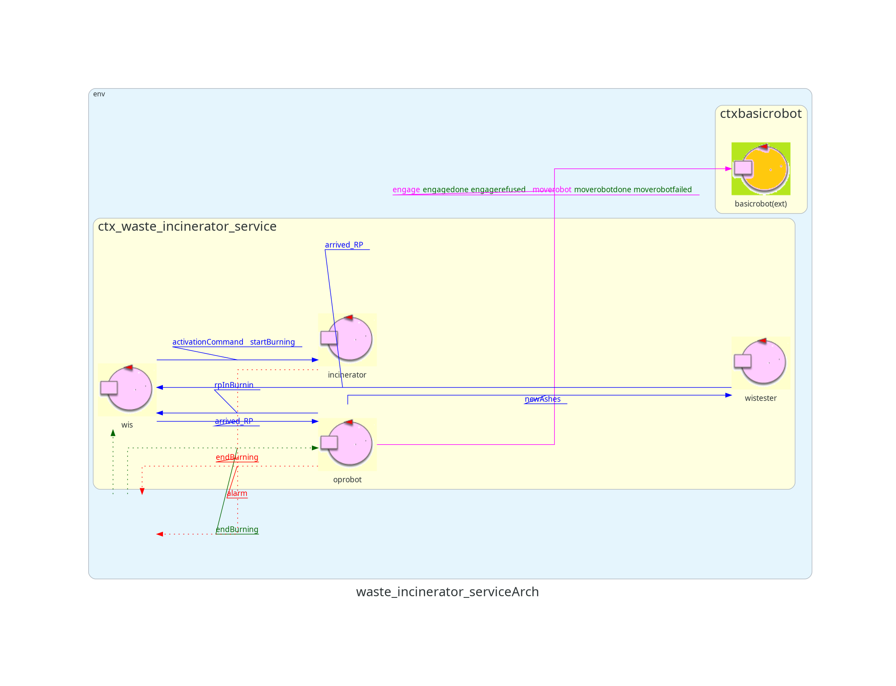
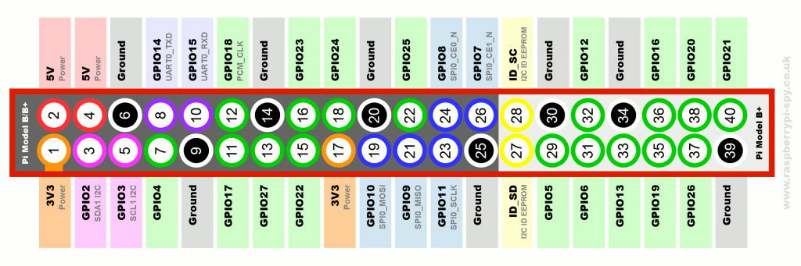
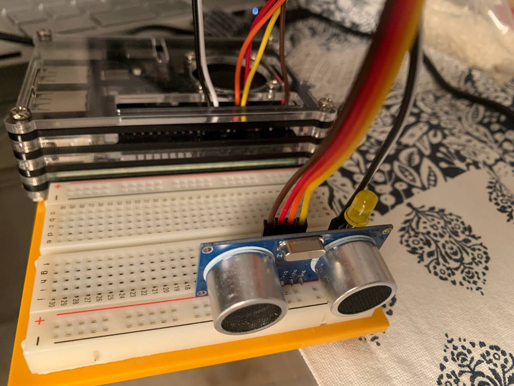

Introduzione
Un'azienda intende realizzare un WasteIncineratorService per trattare i rifiuti bruciandoli e necessita di un servizio di sistema software (WIS) che controlli un robot (chiamato OpRobot) per spostare i rifiuti.
Requisiti
Il seguente link porta al documento dei requisiti fornito dal
cliente.
Documento requisiti
Sprint precedente
Il seguente link porta al documento dello SPRINT precedente, nel
quale si sono affrontati i requisiti sull'interazione WIS-OpRobot e
WIS/OpRobot-Incinerator.
SPRINT 1
Architettura iniziale di riferimento
Di seguito viene mostrata un'immagine che rappresenta l'architettura finale dello sprint precedente, che sarà quindi l'architettura iniziale di questo sprint.

GOAL
In questo SPRINT verranno affrontati i seguenti requisiti:
- Architettura del MonitoringDevice
- Interazione WIS - MonitoringDevice
- Interazione WIS - Scale
Analisi del problema
Architettura del MonitoringDevice
I requisiti specificano che il MonitoringDevice è composto da unSonar e da un Led e lavora su un RaspberryPi, quindi un nodo esterno a quello in cui è presente il WIS.
Per rappresentare il sonar fisico e il led fisico, sfruttiamo quanto ci viene fornito dalla nostra software house.
In particolare, rappresentiamo il sonar attraverso il componente sonar24qak che sappiamo essere composto da due attori:
- sonardevice che si occupadi leggere i dati generati dallo script sonar.py. Tale script non fa altro che rilevare continuamente dati dal sonar fisico presente nel RaspberryPi.
- datacleaner che riceve i valori letti dal sonardevice e si occupa di effettuare un ulteriore filtraggio sui dati.
Il MonitoringDevice verrà quindi visto dall'esterno come un unico componente (che internamente è composto dagli attori appena descritti), le cui interazioni con il WIS verranno discusse di seguito.
Interazione WIS - MonitoringDevice
Le principali problematiche dell'interazione WIS - MonitoringDevice sono le seguenti:
- Quando il MonitoringDevice rileva che l'ashStorage è pieno, come notifica tale informazione al WIS?
- Come capire quando l'ashStorage è vuoto?
- lo stato dei componenti del WIS è conosciuto anche al MonitoringDevice o quest'ultimo deve esplicitamente chiedere tale informazione al WIS?
Incominciamo analizzando il problema P1.
Da requisiti sappiamo che quando l'AshStorage è pieno, e finché l'operatore esterno non lo svuota, il WIS deve impedire che vengano bruciati altri RP.
La scelta più adatta e coerente a quanto descritto nello SPRINT1 (attraverso il mok del MonitoringDevice) è rendere il WIS un Observer del MonitoringDevice, in particolare dell'informazione sullo stato del AshStorage.
Quando il datacleaner del MonitoringDevice rileva una distanza minore o uguale a DLIMT, allora il container è da considerare pieno e quindi aggiorna lo stato.
Ora consideriamo il problema P2.
Capire quando l'AshStorage è vuoto, è più complicato di vedere quando è pieno, in quanto non viene fornito dai requisiti un parametro sulla distanza da rilevare per considerarlo vuoto.
Una possibile soluzione è considerarlo vuoto all'avvio del sistema e ogni volta che viene svuotato dall'operatore esterno.
Un altro modo è introdurre un parametro nel sistema, per il momento costante ma che negli SPRINT successivi può essere impostato dall'utente (ad esempio attraverso la GUI), che indichi la distanza tra il sonar e il fondo del contenitore, così se viene rilevata dal sonar tale distanza, si può considerare l'AshStorage vuoto.
Infine discutiamo il problema P3.
Al MonitoringDevice l'unico componente del WIS che gli interessa realmente è l'Incinerator, in particolare sapere se sta bruciando o meno per accendere o spegnere il led di conseguenza.
Il modo migliore per ottenere tale informazione è far si che il MonitoringDevice diventi un Observer dell'Incinerator, evitando quindi uno scambio di messaggi poco utili tra WIS e MonitoringDevice.
Interazione WIS - Scale
Le problematiche relative all'interazione WIS - Scale sono le seguenti:
- Come calcolare il numero di RP dal peso rilevato dalla scale fisica?
- Come comunicare tale informazione al WIS?
Partiamo analizzando il problema P4.
La principale difficoltà sta nella conversione del peso rilevato dalla scale fisica in numero di RP, in quanto ci viene specificato dai requisiti che un RP è circa WRP = 50 kg, ma questo circa, unito all'errore fisico, potrebbe portare a misurazioni errate.
Inoltre, l'errore di misura può variare da bilancia a bilancia, quindi in questa prima fase di analisi si decide di semplificare la realtà, considerando un arrotondamento "secco" per difetto su WRP per calcolare il numero di RPs misurati: RPs = W/WRP con W peso rilevato dalla scale fisica.
Consideriamo ora il problema P5.
Una volta ottenuto il numero di RPs presenti nel WasteStorage, occorre comunicare tale informazione al WIS.
Un possibile approccio, simile a quanto fatto con il MonitoringDevice, è rendere la scale osservabile e farla osservare dal WIS.
Tuttavia, per sfruttare quanto fatto negli sprint precedenti, si decide di comunicare il numero di RPs nel modo seguente:
- l'attore scale, dopo aver convertito da peso a numero di RP, calcola soltanto la differenza con il numero di RP precedenti.
- sempre l'attore scale manda un Dispatch arrived_rp, per ciascuna unità calcolata, al WIS.
- l'attore WIS, per capire se sono presenti o meno degli RPs, non fa altro che consumare i messaggi arrived_rp dalla propria coda di messaggi ricevuti.
Architettura logica del problema
Definiamo ora un modello, composto da tre file distinti .qak, che descrive come i componenti elencati in precedenza interagiscono tra loro:

{kind=link}
{kind=link}
{kind=link}
Notiamo, come già descritto nell'analisi sull'architettura del MonitoringDevice, che il monitoringdevice delega i vari compiti al sonardevice, datacleaner e led, mostrandosi come unico componente verso l'esterno.
In particolare, il datacleaner ha il compito di pulire i tanti dati ricevuti dal sonardevice e inviare un ashStorageLevel al monitoringdevice che aggiorna statoAshStorage di conseguenza, in base al parametro ricevuto. (0 - vuoto, 1 - nè pieno nè vuoto, 2 - pieno)
Ricordiamo che statoAshStorage può essere 0 = non pieno o 1 = pieno, in quanto al WIS non interessa l'informazione di quando è vuoto.
Configurazione simile la abbiamo per la Scale, che delega il raccoglimento delle misurazioni a scaledevice. Dopodichè, la scale effettua la conversione dei dati e l'invio al WIS come descritto in precedenza.
Progetto
Mentre nella sezione di analisi del problema si è deciso di modellare l'interazione tra MonitoringDevice e WIS e tra scale e WIS con il meccanismo
di observeResource in quanto più coerente con i requisiti dati dal committente, in questa fase si è deciso di optare per una comunicazione di tipo
publish/subscribe, in cui ogni qualvolta un dispositivo in un contesto deve comunicare con un dispositivo in un altro contesto emette un evento ad un
broker mqtt, che si occuperà di girarlo al contesto giusto. In questo modo si riesce a disaccoppiare i singoli contesti, che quindi possono
effettivamente "funzionare" indipendentemente dagli altri.
Si pone ora un problema: supponiamo che il monitoringDevice aggiorni il suo stato di riempimento. Se il wis non fosse nello stato giusto per ricevere l'evento inviato dal monitoringDevice tramite MQTT, quest'ultimo andrebbe perso. A tal scopo (oltre all'obiettivo di disaccoppiare il più possibile le responsabilità degli attori) si è deciso che in ogni contesto, per ogni tipo di evento ricevuto tramite MQTT, vi siano degli appositi attori "proxy" che si occupino di ricevere questi eventi e ritrasmetterli sotto forma di dispatch:
- WIS: può ricevere aggiornamenti sia da parte del monitoringDevice che da scale. Di conseguenza, vengono creati gli attori:
- wismonitoringdeviceproxy: riceve eventi di tipo statoAshStorage e invia al WIS dispatch di tipo ashesLevel
- wisscaleproxy: riceve eventi di tipo new_RP e invia al WIS dispatch di tipo arrived_RP
- monitoringDevice: può ricevere aggiornamenti da parte di incinerator. Viene quindi creato l'attore monitoringdeviceproxy per ricevere eventi di tipo statoIncinerator e inviare dispatch di tipo incineratorState al monitoringDevice.
Inoltre, nel caso particolare del monitoringDevice, si è discusso molto il fatto che adottando questo approccio non si riuscirebbe a capire in maniera
diretta se quest'ultimo stia funzionando correttamente e se sia ancora connesso al broker (a differenza dell'approccio adottato in fase di analisi,
che garantirebbe, grazie al fatto che i contesti sono collegati tra loro, che in caso di scollegamento di una parte le altre siano in qualche modo
notificate). In effetti, si è concluso che se il monitoringDevice non riuscisse più a comunicare con il wis per qualsiasi motivo, quest'ultimo non
dovrebbe essere in grado di continuare con la sua esecuzione. Di conseguenza, in modo tale da non rinunciare al disaccoppiamento offerto dalla modalità
publish/subscribe, si è deciso di fare in modo che il monitoringDevice invii comunque lo stato di riempimento dell'ashStorage ogni 10 secondi nel caso
in cui non vi fossero aggiornamenti. Dal lato del wis, se non vi sono aggiornamenti da parte del monitoringDevice da più di 10 secondi, ci si posiziona
in uno stato di stallo fintantoché non arrivino nuovi aggiornamenti.
{kind=link}
{kind=link}
{kind=link}
Dispositivi utilizzati
Entrambi i dispositivi "esterni" (scale e monitoringDevice) sono pensati per essere eseguiti su raspberry Pi. Di seguito viene illustrato come sono stati montati:
- monitoringDevice: il monitoringDevice è composto da un led e da un sonar HC-SR04. Per poter pilotarli vengono predisposti i seguenti script: ledDevice.py, sonar.py Coerentemente con quanto imposto dagli script, occorre montare i dispositivi nel modo seguente ad un raspberry Pi:
- led: collegare l'anodo (gambo lungo, +) al GPIO pin BCM25 (fisico 22) e il catodo (gambo corto, -) a GND (fisico 20)
- sonar: collegare:
- VCC al pin fisico 4
- GND al pin fisico 6
- TRIG al pin fisico 11
- ECHO al pin fisico 13
 - scale: la scale è composta da una load cell e un convertitore AC/DC hx711. Per poter leggere il peso dalla bilancia viene predisposto lo script scaleDevice.py . Coerentemente con quanto imposto dallo script, occorre collegare i dispositivi nel modo seguente:
- hx711 e raspberry:
- VCC al pin fisico 4
- SCK al pin fisico 18
- DT al pin fisico 16
- GND al pin fisico 9
- hx711 e scale:
- E+: filo rosso
- E-: filo nero
- A-: filo verde
- A+: filo bianco
Piano di test
Dovendo avere a che fare con dispositivi di input che devono comunicare tra di loro su contesti diversi, si è pensato che il test automatizzato dovesse prevedere di verificare che arrivino effettivamente messaggi di ogni dispositivo sul broker MQTT. In particolare, per ogni attore coinvolto, si è deciso di effettuare un test che verifichi che entro un lasso di tempo di 20 secondi dall'avvio del WIS, non vengano ricevuti aggiornamenti. Gli attori in questione sono:
- MonitoringDevice: emette già eventi periodici al massimo ogni 10 secondi
- Scale: emette un evento soltanto quando arrivano nuovi pacchetti. Si è deciso di modificarlo in modo tale che, se entro un intervallo di 10 secondi non vi sono aggiornamenti, si invia un evento new_RP con payload 0 (che verrà scartato dal proxy dal lato del WIS)
Il test automatizzato può essere trovato qui.
Deployment
Per poter provare questo primo prototipo del sistema, occorre eseguire i seguenti componenti nel seguente ordine:
- Ambiente di simulazione VirtualRobot: posizionarsi nella cartella it.unibo.virtualRobot2023, aprire un terminale e lanciare il comando docker compose -f .\virtualRobot23.yaml up;
- BasicRobot: posizionarsi nella cartella unibo.basicrobot24, aprire un terminale e lanciare il comando gradlew run;
- WasteIncineratorService: posizionarsi nella cartella sprint2, aprire un terminale e lanciare il comando gradlew run;
Contemporaneamente a quanto fatto per avviare il WIS, occorre avviare dai due nodi diversi su cui risiedono rispettivamente la logica della Scale e del MonitoringDevice i relativi contesti. Per farlo occorre:
- Creare un eseguibile sia per il MonitoringDevice che per la Scale eseguendo ./gradlew distZip;
- Copiare il file zip generato su entrambi i raspberry;
- Unzippare il file e lanciare il file eseguibile della sottocartella bin.
Suddivisione dei compiti
- Analisi del problema: tutti i membri hanno contribuito, in particolare:
- Bryan: concentrato principalmente sull'interazione WIS - MonitoringDevice.
- Gabriele: concentrato principalmente su Interazione WIS - Scale.
- Emanuele: concentrato principalmente sull'Architettura del MonitoringDevice.
- Definizione del modello: tutti i membri hanno contribuito, in particolare:
- Bryan: modifica del WIS, in particolare per ricevere gli updateResource da contesti esterni, e supporto nell'interazione tra i componenti.
- Gabriele ed Emanuele: logica della scale + logica del monitoringdevice.
- Progettazione: tutti i membri hanno contribuito, in particolare:
- Tutti: discusso assieme i vantaggi/svantaggi dell'uso di un metodo publish/subscribe anziché updateResource.
- Emanuele e Gabriele: montaggio fisico dei componenti sui due RaspberryPi e modifiche al codice dei componenti.
- Testing: piano dei test deciso assieme. L'effettiva realizzazione è stata affidata a Gabriele.
Sprint futuri
Nel prossimo sprint si prevede di implementare la ServiceStatusGUI.